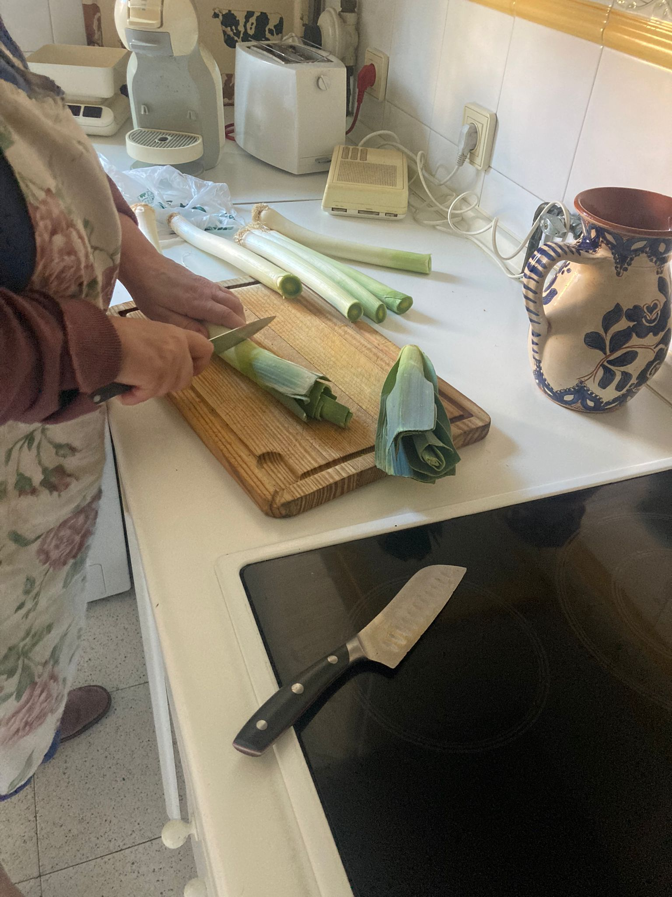
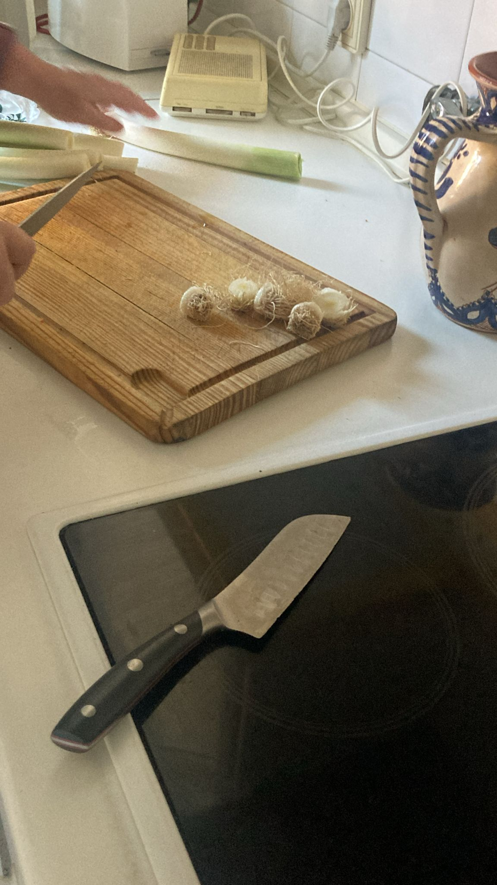
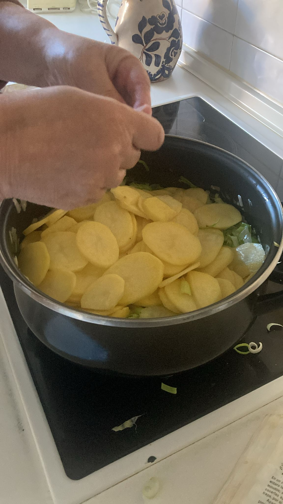
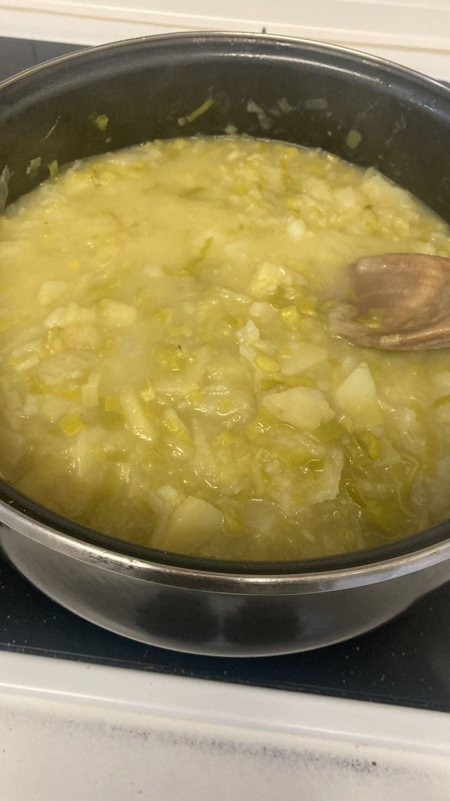
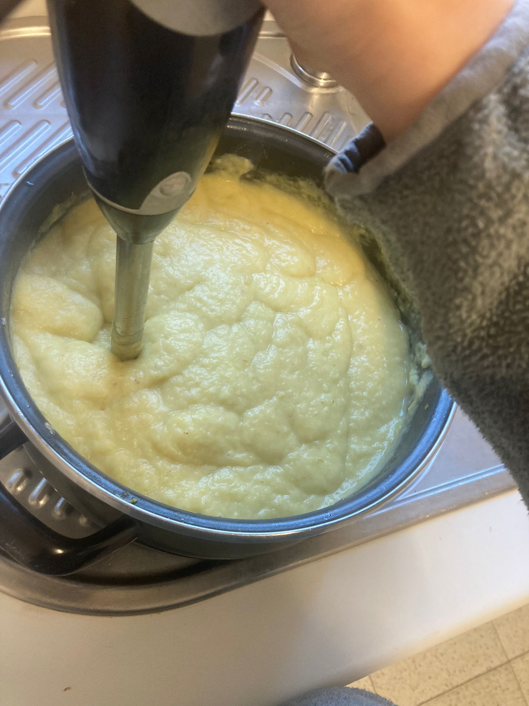
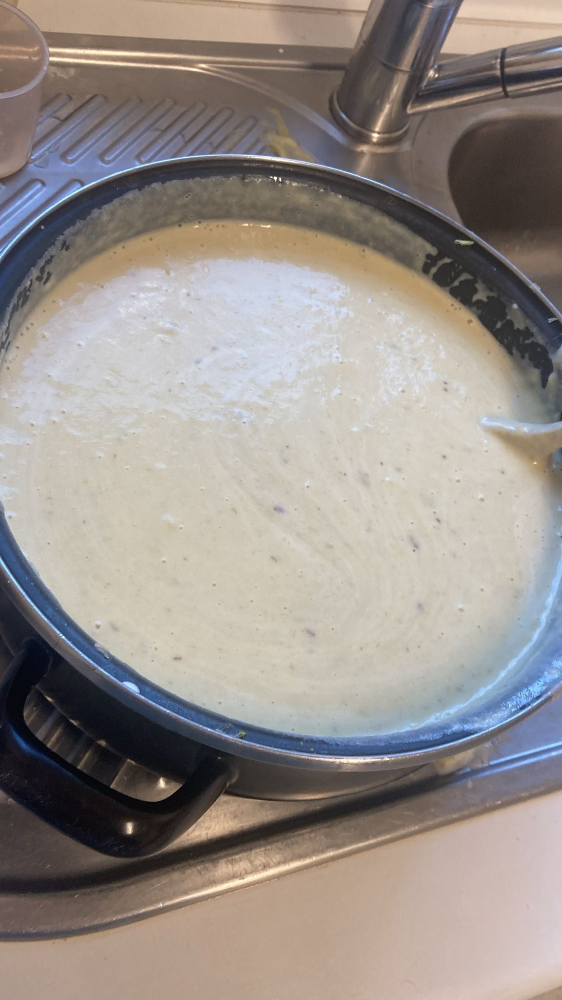

- Le quitamos lo verde y la cabeza a los puerros.
- Picamos los puerros, las cebollas, y las patatas.
- A fuego bajo, derretimos la mantequilla.
- Sofreímos un poco la cebolla en la mantequilla y después echamos los puerros.
- Dejamos las verduras a fuego lento hasta que estén blanditas. Cuando estén blanditas ponemos las patatas.
- Añadimos el agua con los cubitos de caldo, o directamente el caldo hecho.
- Dejamos un buen rato a fuego lento hasta que las patatas se cocinen. Unos 40min. Las vamos removiendo y triturando con la cuchara.
- Quitamos del fuego y dejamos enfriar. Después lo trituramos con una batidora de mano.
- Echamos la leche y la nata y mezclamos con una cuchara. NO con la batidora para que no se suba la nata.





